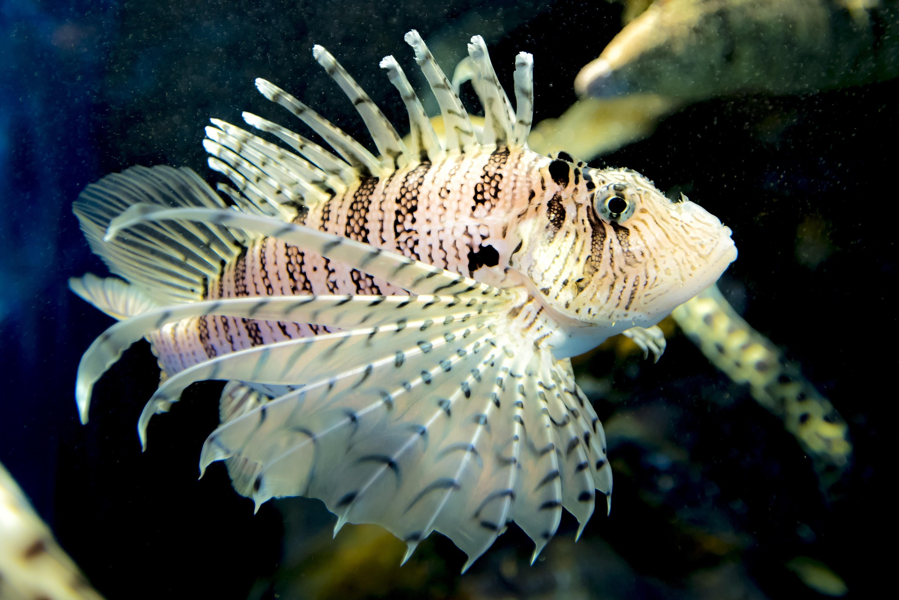
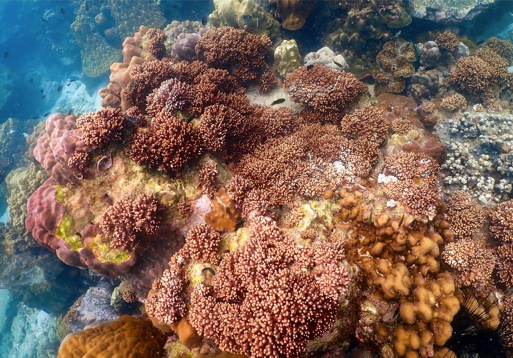

Aquatic Image Gallery

Clownfish
Lionfish are strikingly beautiful but venomous predators known for their long, flowing fins and invasive presence in many marine ecosystems.

Corals
Corals are small marine animals that live in colonies and play a vital role in building coral reefs, some of the most diverse ecosystems on Earth.

Octopuses
🐙 Interesting Facts About Octopuses Three Hearts Octopuses have three hearts: two pump blood to the gills, and one pumps it to the rest of the body. When they swim, the heart that pumps to the body stops beating! Blue Blood Their blood is blue because it contains copper-based hemocyanin, which helps them transport oxygen in cold, low-oxygen water.

Jellyfish
Graceful and translucent, jellyfish pulse rhythmically in ocean currents.